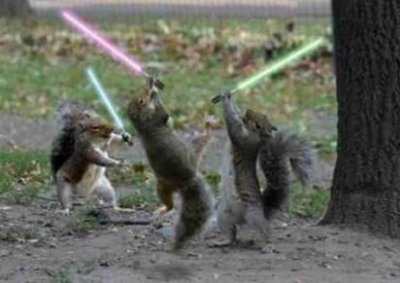

Ejército de Ardillas Independientes
 De: La Frikipedia, la enciclopedia extremadamente seria.
De: La Frikipedia, la enciclopedia extremadamente seria.
Este cuerpo militar, que en tiempos garantizaba la seguridad de las ardillas que cruzaban la península Ibérica sin tocar el suelo, ha quedado reducido a su 10ª parte y perseguido hasta la extenuación por los secuaces de Alessandro Volta VIII, presidente de Ibertrola. El Ejército continúa sus actividades en la clandestinidad. Y hasta aquí puedo leer...
Los expertos afirman que estas ardillas estan creando una maquina en forma de tostador que sería capaz de destruir 2 planetas y medio, y talvez un meteorito (no esta confirmado), este tostador gigante pesaria 400.013 toneladas Venusianas que vendían a ser 2 kilos aqui. esta maquina no destruiria lanzando una lluvia de coca cola en las zonas mas pobres del mundo y volviendo a sus niños en criminales con sobrecarga de azúcar
Historia
En el año 23 A.ac/dc (antes de AC/DC)los power rangers no eran lo suficiente mente poderosos para dominar a CARREFOUR por lo que creearon a TACHAN TACHAN EL EJERCITO DE ARDILLAS INDEPENDIENTES el cual domino y sometio al CARREFOUR hasta que se aburrieron y construyeron la "tostadora voladora violadora de culitos virgenes III " (era el nombre de su primer cohete espacial), mataron a Osama Bin Laden a base de A.M.O.R ( Armamento Mundial 0 Regional). Despues se fueron al espacio.
Religión
 Preparados siempre contra los aliens.
Ellos veneran a su lider penedector con ciertos y exclusivos manjares, entre ellos están:
- 3 litros de queso (echo con semen de penedector
- un carrito de supermercado carrefour
- un CD con todos los exitos de Britney Spears
- una pizca de sal
- el mejunje Art Attack
Gyura, el sacerdote mas antiguo de la cultura, creo una ecuación capaz de encontrar el significado de la vida, esta ecuacion dice asi:
numero de maricas en el mundo + numero de patadas giratorias hechas por Chuck Norris - 000.041 + numero de CI de belen estaban (-2)
esto nos da el increible numero 41 42, que confirma la inteligencia de los humanos que lo habían descubierto ya.
Destacan
Meoura: inventor de la tostadora voladora violadora de culitos virgenes III
Zatyan: invento la violación
Tinka Zaytan : primera persona violada
Bill gates : inventor del vaso de cristal
Atentados Contra la Humanidad
- Intentar derrotar a Chuck Norris
- Imitar a Weird Al Yankovic
- Tratar de asesinar a IP anónima
- Subir el precio del combustible
- Dejar que Yorsh Buch siga en los Yunai Esteis
- Impedir trabajar a ETA
- Crear a Wally
- Matar a pinki y cerebro
- Ser bailarines de Michael Jackson
- Crear una maquina nuclear utilizando Bellotas
- Expedir cheques sin fondos con la cara de George Bush
- Poner letreros en el espacio para confundir a los extraterrestres
- violar varias veces a IP anónima
- excitar a Obama
Armamento
sus principales armas son estas:
- Cillit Bang: para mas información de esta arma pincha en el enlace
- CD de justin bieber
- la tostadora voladora : como ya se ha comentado arriba
- CD de Daddy yankie
- lanzador de nokias : alta peligrosidad
- Ak-48: estan a un nivel superior a nosotros
- cyborg de Hitler
- poseen un ejemplar de las "blades of athena": las espadicas estas con cadenas que utilizaba Kratos
- ademas de un lanzapollas-69 que violara a IP anónima
- otro bote de cillit bang
¿Sabias que...?
- el E.A.I (Ejército de Ardillas Independientes) Producen el 50% de la cocaina
- al E.A.I les excitan los caballos con un menton fuerte
- el E.A.I es el mayor consumidor de hentai
- Comparten ADN con Tarantino, Axel Roses y Danny trejo (machete)
- no utilizan lapices
- en caso de invasion rusa son el arma secreta
- Pueden eruptar y peer al mismo tiempo de tan machos que son
- Tienen licencia para peinar a Rajoy
- Su proximo ataque es contra los politicos españoles
- estan de detras de ti con el lanzapollas-69
- su forma de suicidio mas frecuente es viendo telecinco 5 minutos seguidos...
- la palabra rimbombante les gusta...
- ¿y a quien no?
- untan sus tostadas con sida
- son inmunes al sida
- el sida les gusta
- las cabras son sus aliadas
- se esta planeando volver a dominar Carrefour
- conocian a la mona lisa
- poseen una maquina del tiempo
- los dinosaurios intentaron dominarlas
- ayudaron a Leonardo Da Vincci
Véase también
Continuara
Autor(es):
- JacintoCanek
- Doctor grijander
- Frikiman
- Azulejos
- Lunasfingo
- Alex el Mono
- Sealand18
- Mad Max
- Plasnisk
- Cepulturero
Frikipedia 2005-2016, Licencia
GFDL 1.2 - Extraído por FrikiLeaks